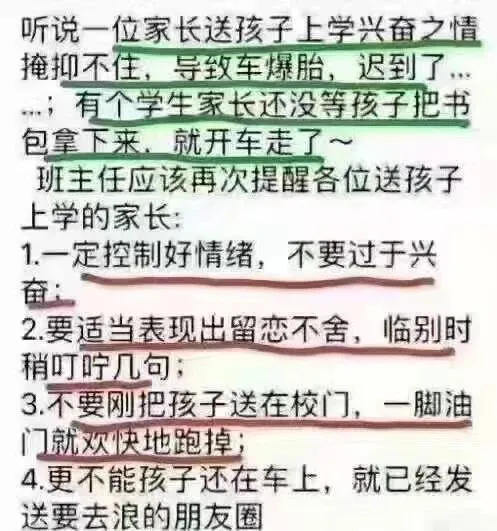
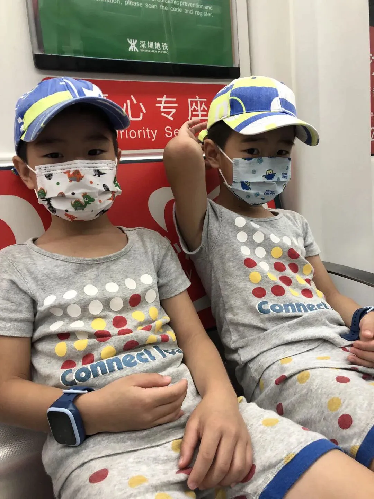
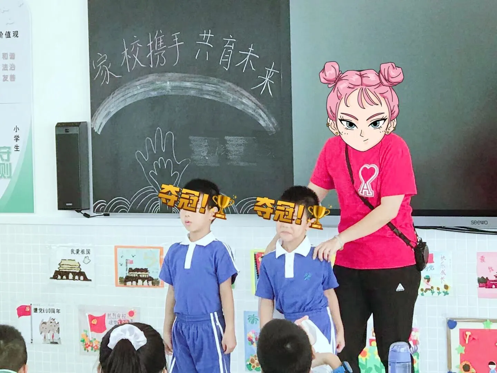
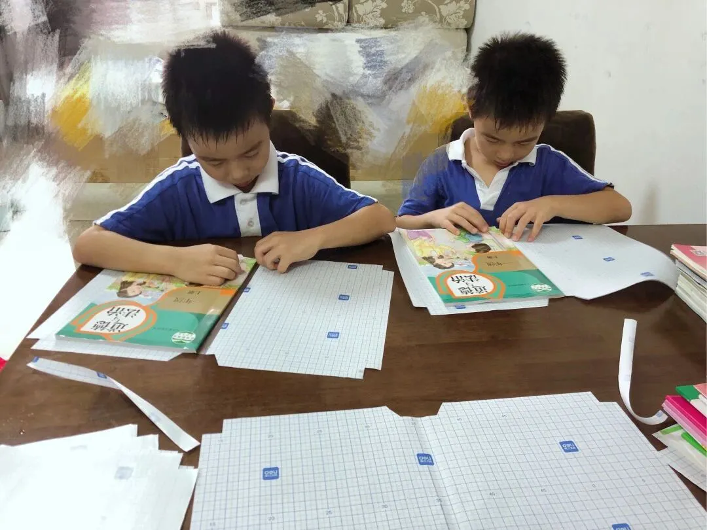
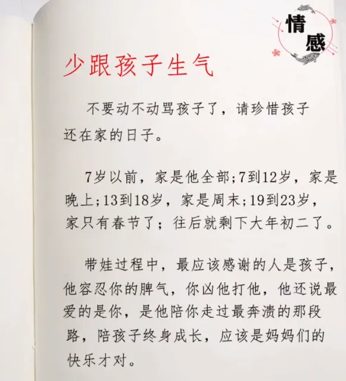

孖仔帮
公众号ID：twinsbang
关注
文|圆圈妈
网图|侵删
断更了一个月，承蒙惦记，谢谢你们！
我复活了。
#先插播一则群通知#：第13期双胞胎跳蚤市场群已开放，公众号输入“赶集13”，扫码即可入群。
9月1日，圆圈开学日，我给自己准备了一份豪华大礼包：美滋滋地睡了2个小时的回笼觉。
真的太累了，整个暑假都在忙，忙着搞两个即将要上小一的6岁男小孩。
煮一日三餐，催起床，催吃饭，催睡觉....陪聊陪玩陪练（练习拼音）陪打球...没有一天好好休息过。
能安静无干扰地睡上一觉真幸福，虽然只有短短的两个小时，但已经很阿弥陀佛了。
前几天看到群里分享的一张截图，我笑了，这些家长太能了，把我一直想做的事情都做了。
没孩子的人会觉得这是瞎编，但只有我们这种一拖二的全职妈妈最清楚，这才是本色出演，真情流露。
带着两个娃经历漫长暗无天日的暑假，终于迎来万兽归笼的这一天，那种狂喜，那种澎湃，当到了极点时，的确会乱了分寸，没了逻辑，失了心疯。
甚至会喜极而泣，哭得像小孩。
反正，我把他们哥俩丢进学校后，就激动到肉流满面...
看着他们小小的身子背着大大的书包，晃悠悠地走向教室，我的那个成就感啊，瞬间爆表。
从来没觉得自己有多能耐，大概就从那一刻开始吧。
我觉得自己真的太能了，我那么平庸的一名中年妇女，竟然能把两小只养到这么大，都上小学了，太不容易了，被自己感动到一塌糊涂。
天知道，就在开学的前几天，为迎接圆圈兄弟的一年级新生入学，我都经历了哪些大型事件，那场面堪比再来一次剖腹产。
6年前的那场剖腹产，刚下手术台就飙血压，上心电监护仪，疼了一个晚上，气若游丝，全身上下，搁哪哪疼。
6年后，两只小神兽上小一，为做好入学准备，每天殚精竭虑，草木皆兵，忙得脑壳疼，肝儿颤，总之也是浑身上下，搁哪哪都酸。
特别是临近开学的那几天...
26号晚，圆圈的分班结果出来了，
意料之中，分在同一个班。
其实我有点失望，又觉得也好，电脑随机分班的，那就顺应自然吧，但又觉得不妥。
两兄弟的差异性越来越大，相互影响的负面作用也越来越明显，若是同班，指不定会互相抄作业，说不准会被老师做正反教材....
这是我最担心的！
当我在家庭群说我想把圆圈分开不同班级时，马上遭到强烈抗议。
外婆说，干嘛想不开啊？不在一个班，上学接送很麻烦的。
奶奶说，两个孩子在一个班好，凡事都有个照应，要是哪个被欺负了，还能帮着点，
爷爷说，辅导作业要辅导两次，你可要想清楚啊？别苦了我的宝贝孙。
外公说，我看你是吃饱撑着没事干，还嫌不够折腾吗？
我耳朵听着，嘴里应承着，心里却冒出一个坚定的声音：老人家懂个啥，我这也是为了他们俩好。
27号，开新生家长会，
因家长会不让带孩子去，我只好把圆圈送到30多公里远的圆圈大姨家，上午送过去，中午还没来得及吃口饭，就往学校一路狂奔。
坐地铁，送他们去大姨家，来回3个小时
当我坐在教室里一边大口喘气一边签到时，才发现双胞胎同在一个班级有多省事，多简单，多粗暴。
不然，这2个小时的家长会，其他家长悠哉地坐着，唯独我像只蚱蜢一样，在两个班之间不停地上跑下窜。
果然姜还是老的辣，四位老人家料事如神，我终究还是被无情的现实打脸了。
尝到同班的甜头，发现不同班的诸多不便，家长会一结束，我就闪了，申请分班一事就此作罢！
老母亲精力有限，实在折腾不起，库存不多的几口仙气还得应付后面的双减政策。
28号，圆圈的新生入学培训一天
懒散个把月的的圆圈竟然表现很好，一切都很顺利，想必是对新环境新学校新同学拭目以待了。
▲新生自我介绍，
双胞胎的好处就是，只要两人同时出现，
瞬间就被所有人记住
中午去接他们放学，在路上听到一段爷孙俩的对话：
孙子：爷爷，爸爸几点起床的啊？
爷爷没好气地回答：11点
一个中年男人，拖家带口还能睡到11点，太招人恨了！
家有给力的老人家帮带娃，真是色香味俱全，像我这种没人帮带娃，做什么事，去哪里都要全家总动员的家庭，真的香不起。
突然间很心疼圆圈爸。
不到6点钟就起床，下楼去买菜，买上来还得给我们娘仨做早餐，做好了还得煮自己中午带的便当，同时还要催两位大爷起床，匆匆啃几口馒头，还没咽下去，就送娃去。
而我呢，洗漱一番，打扫卫生，准备中饭，还没歇口气，就要去接娃了！（一年级10点30分就要去接）
突然觉得之前想要三孩的念头，太讽刺了！就这样，还敢生老三？
真是伤害性不大，侮辱性极强。
29号，信息大轰炸的一天
先是班级群，接着分支出一个家长群，然后又冒出午托群，很快又有了家长义工群，还没到晚上，英语老师又让扫码进入作业群....
每一个群都是上千条信息，爬完一个楼，接着爬另一个楼，生怕漏掉了哪些重要信息，我们家圆圈就考不上清华北大。
于是一整天都在刷微信群...然后跟着一群同样没经验的家长，四处乱窜。
晚上累趴在床上，动弹不得，满脑子都是各种群，各种信息...来不及消化也吐不出来，总感觉很多事情没做完，很累很困，就是焦虑到无法入睡。
同时又暗自庆幸，还好分在同一个班，所有通知到的事情，做一次就可以了，不然...这么多群，还得double，每个班又情况不一样，还得分谁是谁，谁要干嘛，谁要准备什么....
苍天啊，让我枯了吧！
31号，去学校领新书，
可能没了新鲜劲，两小只怎么催都起不来，最后在出门前的5分钟穿好校服，没刷牙没洗脸没吃早餐就出门了。
领回来的书，老师要求要包书皮，于是我整个下午都在包书皮，每人19本书，两个娃，合计38本。
包书皮是个技术活又是体力活，要求书皮与书面平整贴合不能有气泡。这太难了，我可是资深手残党啊，一看就会，一做就废，琢磨了很久才开窍。
▲包书皮，是对手残党的家长最大的侮辱
偏偏我还作死了，为充分显示自己有多么重视亲子互动，竟让两个捣蛋鬼一起来包书皮，刚开始我还能温柔似水地教，到最后直接河东狮吼，让他们一边玩去。
双胞胎的亲子互动，可以有，但不能乱来，千万要选对互动项目，不然就是大型的翻车现场。
反正，38本书包完之后，我的十个手指头都失灵了，动弹不得。
以上，一点小杂碎，请笑纳，不管你们看完后笑了还是囧了还是怕了，这些读后感都不应该有，而是应该倍加珍惜与屎尿屁时期的双胞胎在一起的点点滴滴。
趁着两只小肉团还小，多抱抱他们，多亲亲他们，多和他们说说话，多对他们笑一笑...
不然到了孩子们上学的年纪，以上，你很难做到！
因为，育儿的大事小事往后会更多，更破，更扯，更屁....那种如影随形的杀伤力会随时稀释掉你对孩子们当初那浓浓的爱意。
然后，一天24小时，你会有三分之二的时间，只想着把他们拎出来狠狠揍一顿，打八百遍都不嫌多。
当然，也不必太过于恐慌，以下这段话请果断收藏，亲测还挺管用的。
当我每次想揍圆圈时，我就会深呼吸一口气，快速回忆下这段话，效果很显著，立马就放下衣架子，换上稻草杆打手掌心。
我现在已经有进步了，可以控制自己在睡着的状态下，不再想要揍娃了（哈哈！多么阿Q啊！）
另，如有家中老人帮带双胞胎的，请记得心怀感恩。
家有一老，如有一宝，尤其是有孩子要上学的家庭，关键时刻，老人家就是这个家的定海神针。
不要问为什么，问就是too young too simple！
如果还是想问，那好吧，请看下回分解。
《家有老人带双胞胎，到底有多香》
今日互动话题
#双减政策下，双胞胎的教育该何去何从？#
评论区聊一聊呗！
微信公众号：孖仔帮
ID : twinsbang
专注双胞胎孕育，养育，教育经验分享
扫码关注我们
点一下你会更好看耶





